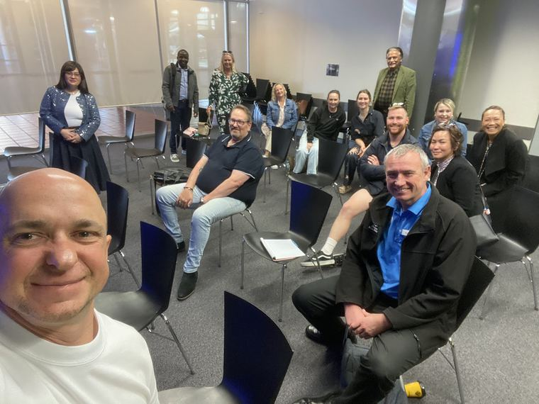
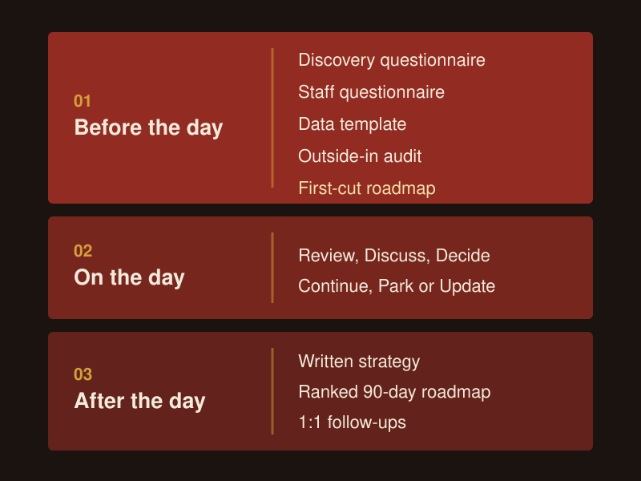
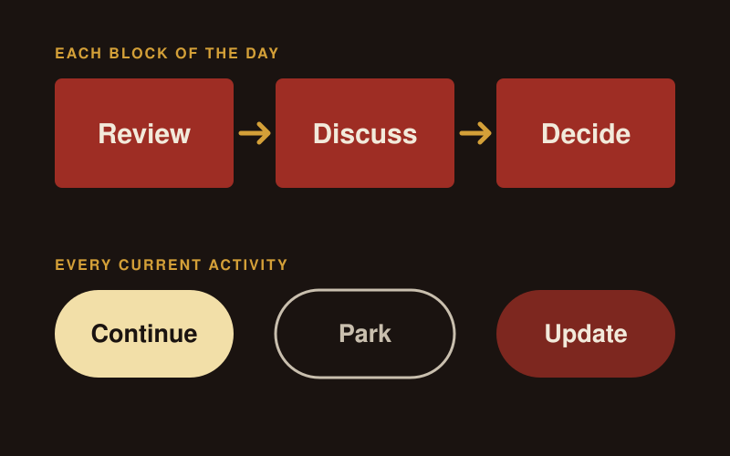
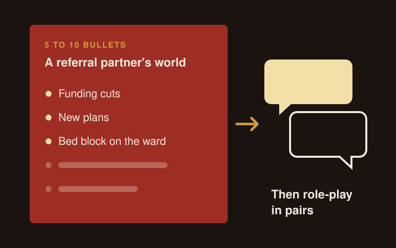

NDIS Business Coaching and Workshops for Owners and Teams
NDIS business coaching with me means regular sessions with you and your team on marketing, referrals, AI and sales, plus one-off strategy workshops. A workshop starts with pre-work, runs as a facilitated half or full day, and ends with a written strategy, a ranked 90-day roadmap with owners, and 1:1 follow-ups for each leader.
I'm NSW-based and work with NDIS providers Australia-wide. CL Growth Academy is a boutique NDIS marketing agency, and as I put it, "I act as an outsourced CMO and growth coach." So the sessions cover the whole growth side of your business, with your care coordination and intake teams in them as well as your marketing people.
What does my NDIS business coaching cover?
It covers how your business gets and keeps clients: who you're for, what you say, how you work with referral partners, and how your team handles every enquiry. I call enquiry handling what it is, which is sales. This is not about client supports, registration, audits or anything policy related. If you need that, I suggest Tania Gomez or Paul Bryan.
I work through it in a set order: direction, niche, audience, message, then channel. Channels come last on purpose. If the message could belong to any provider, more ads or posts just spread it further.
A good first exercise for an owner: write down ten problems you solve, pick the three that matter most, and write one line on each. That becomes the start of your message. I push for specifics here, because "nice isn't enough to be remembered."
Coaching covers AI too. My AI and automation specialist and I train your team to use AI tools in the work they already do, such as drafting posts and ads, following up enquiries and pulling reports together, and set the rules for what never goes into an AI tool, like a participant's details without consent.
Coaching sits alongside the channel work on my NDIS marketing page. You can run the channels yourself and use me as the coach, or have my team run them.

What happens in an NDIS strategy workshop?
A workshop runs in three parts: pre-work, the day itself, and written follow-up. It suits a provider facing a real decision, such as how to set up the growth side of the business, whether to rebrand, or what to focus on for the next 90 days. Workshops and coaching run in person or online.

Before the day
I send a pre-work pack so "the workshop starts from a draft, not a blank page." It includes:
- A discovery questionnaire for the owner and leadership team.
- A short staff questionnaire, so people who can't attend still have a say.
- A data template for enquiries, referrals and capacity.
- An outside-in audit, where I check how you show up to referrers and families online.
- A first-cut roadmap for the day to work from.
I need 3 to 4 days with the pre-work before the workshop, so I can review it properly.
On the day
Each block of the day runs the same way: Review, Discuss, Decide. We review what the pre-work found, discuss the options, and write the decision down before moving on.
Every current activity gets one of three ratings: Continue, Park or Update. That stops a team carrying half-finished projects into the next quarter.

After the day
You get three things:
- A written strategy document.
- A ranked roadmap with an owner beside every line, capped at 5 to 7 priorities for the next 90 days.
- 1:1 follow-up sessions with individual leaders, so each person turns the direction into their own next steps.
Who is each session for?
I run sessions for each group in your business, because each one talks to clients and referrers in a different way.
| Who attends | What the session covers |
|---|---|
| Owner and exec team | Direction, niche and audience, the 90-day roadmap, what to Continue, Park or Update, and how decisions get made |
| Intake and coordination team | Enquiry calls, follow-up, answering "what makes you different?" with something real, and logging every enquiry and where it came from |
| BDMs and referral staff | A referral partner's world, how to make the ask, what to say on a no, events and LinkedIn outreach |
| Marketing team | Message, channel plan, what to post and send, and reporting spend against clients signed |
For leadership teams I bring in the 1-3-1 habit I use with my own team. Bring every issue as one problem, three options and one recommendation. When your leaders bring issues that way, your meetings end in decisions.
What does a whole-team referral session look like?
Everyone who talks to referrers, including frontline staff, learns what a referral partner's week looks like and then practises the ask. Each person writes 5 to 10 bullets on one referral partner's world: funding cuts, new plans, bed block on the ward. Then the team role-plays the conversation in pairs.
Frontline staff are an untapped referral source. Support workers and coordinators talk to families, OTs and hospital teams every week, so I give them prompts and the words to use. One easy question for a hospital contact: "Do you have anyone coming up to a discharge?" Ask it when that person is happiest with your service.
I also change how teams talk about vacancies. When your team says "we've got capacity", the referrer learns you have room and nothing about who you're right for. Then you get referrals you have to turn down. I have teams say "we've got a spot opening for someone with complex needs in [area]" instead.
Follow-up sessions then cover three things:
- Mapping the client's path from enquiry to first service, so each staff member picks their own moments to ask.
- Role-playing the objections your team hears.
- Agreeing how every referral gets logged, so you can see who sends you clients.
The referral side of this is set out on my referral partnerships page.

Do you run sales coaching for NDIS intake teams?
Yes. I coach intake staff, coordinators and team leads on enquiry calls, because families often contact two or three providers at once. We cover:
- Calling back fast, the same day at the latest.
- Running the first call as a conversation about the person and what matters to them.
- What to say when someone says "send me an email", which usually means they haven't seen enough value yet.
- Asking "how did you hear about us?" on every enquiry, with a referral option that asks who sent them.
The full enquiry process is on my sales and enquiry process page.
Do you train staff on LinkedIn?
Yes. Staff LinkedIn sessions come with homework: a cover photo, a headline that says who you help, a bio that opens with why you do the work, and one post within 4 weeks. Then I audit every profile live with the group. Referrers look your staff up before they refer, so every profile counts. Details are on my LinkedIn for NDIS providers page.
How do you help a team get more from events?
I plan every event in three parts: "pre-event, event and next-day follow-up." Before the event, the team picks who they want to meet. On the day, they collect details. The day after is for calls: follow up within 24 to 48 hours and put every contact into your CRM with a tag for who they are, so referrers and families end up on separate lists.
How often should coaching sessions run?
Monthly suits a team running its own marketing. In my experience, "a short slot every month would do more than a single big session." We meet, you do the work between sessions, and we adjust the plan each month.
Which level of help do you need?
I offer three depths of help. Pick the one that matches how much your team can take on.
| Depth | What it means | Where it fits |
|---|---|---|
| Done for you | I design the approach and my team builds and runs it | NDIS marketing channels and websites |
| Done with you | You lead your own marketing. We meet regularly, you do the work, and we refine it together | Coaching on this page |
| Done by you | I train your team and hand over the plan, and your team runs it | Workshops and team sessions on this page |
If you want the whole thing planned, budgeted and reported for the year by one person who knows the sector, that's Managed Growth.
FAQ
How long is an NDIS strategy workshop?
The workshop itself is half a day or a full day, depending on how many decisions you need to make. Before it, your team completes a pre-work pack, and I need 3 to 4 days to review it. After it, you get a written strategy, a ranked 90-day roadmap with owners, and 1:1 follow-up sessions with each leader.
What does my team need to prepare for a workshop?
Your owner and leadership team complete a discovery questionnaire, your staff complete a short questionnaire, and someone fills in a data template on enquiries, referrals and capacity. I do the outside-in audit of how you show up to referrers and families, and I bring a first-cut roadmap for the day to work from.
Can offshore or part-time staff take part?
Yes. Staff who can't attend the day complete the staff questionnaire in the pre-work, so their view of enquiries, referrals and day-to-day problems is in the pre-work before any decision gets made. The 1:1 follow-ups and team sessions can include them too.
Is this marketing coaching or sales coaching?
Both. I coach owners and marketing teams on message, channels and what to post and send, and I coach intake staff, coordinators and BDMs on enquiry calls, referral conversations and follow-up. In an NDIS business the same people often do both, so I run them together.
Do I need coaching or a workshop?
Book a workshop when your business has a real decision to make, such as how to set up the growth side of the business or what to focus on for the next 90 days. Choose coaching when you want to run your own marketing and need a plan, regular sessions and someone to hold you to it. Many teams start with a workshop and move to coaching.
How much does NDIS business coaching cost?
The price depends on scope: how many people, teams and brands take part, and how often we meet. I quote after a free growth audit, once I know what you need.
Get a free growth audit
Book a free growth audit and I'll tell you whether a workshop, coaching or team sessions will make the biggest difference for you right now.